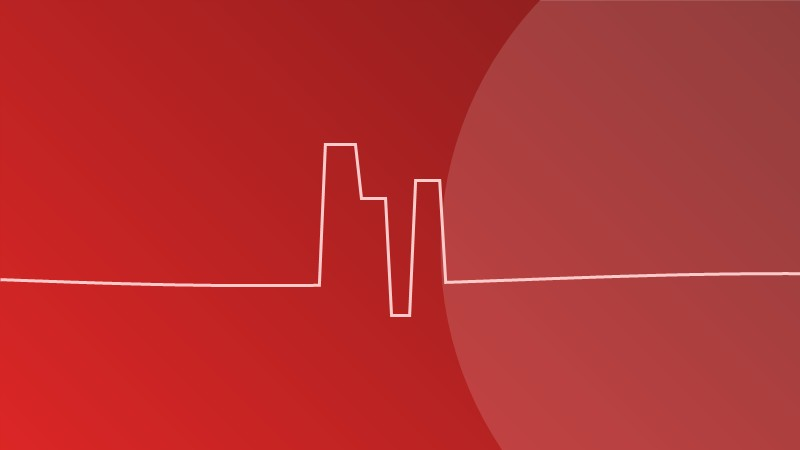
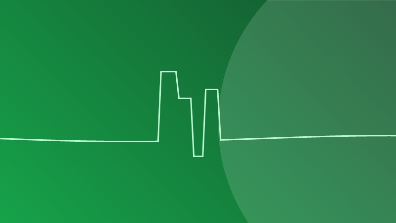
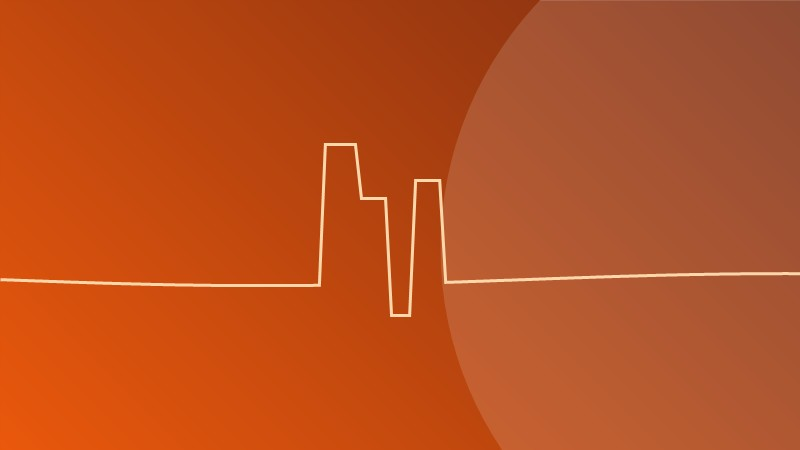
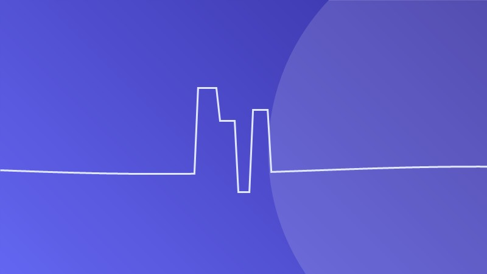

Aneurismas

Aneurisma cerebral: ¿qué es y cuándo es una emergencia?
Conoce qué es un aneurisma cerebral, sus síntomas de alerta y por qué la atención oportuna puede salvar vidas.
Leer artículo →Artículos educativos escritos y revisados por el Dr. Henry Pacheco para que comprendas mejor las enfermedades del cerebro y cómo prevenirlas.

Conoce qué es un aneurisma cerebral, sus síntomas de alerta y por qué la atención oportuna puede salvar vidas.
Leer artículo →
El tiempo es cerebro. Aprende la regla RÁPIDO para identificar un accidente cerebrovascular y cuándo acudir de inmediato.
Leer artículo →
Descubre cómo esta técnica mínimamente invasiva permite tratar patologías cerebrales sin abrir el cráneo.
Leer artículo →
La mayoría de los ACV son prevenibles. Conoce los factores de riesgo y los hábitos que protegen tu cerebro.
Leer artículo →
El dolor de espalda no siempre requiere cirugía. Conoce las opciones de tratamiento para la hernia discal.
Leer artículo →
La evolución de la Unidad de Neurointervencionismo del Hospital Carrión y su impacto en la salud pública.
Leer artículo →